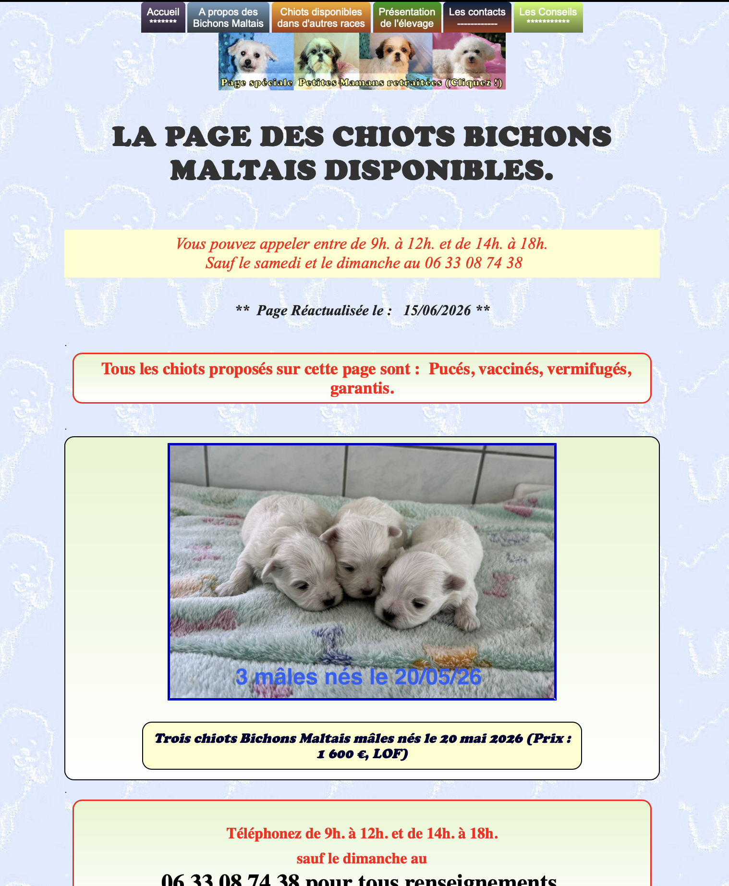

COMPRENDRE
Audit Fenty Beauty

BUT 1
En première année de BUT, lors du projet Fenty Beauty, j’ai réalisé un audit d’un site web afin d’analyser son fonctionnement et ses points forts. À cette période, j’avais encore du mal à comprendre l’intérêt de ce type d’analyse et la manière dont elle pouvait être utilisée pour améliorer un site. Les notions étudiées restaient assez théoriques pour moi.
En deuxième année, avec le projet sur le référencement, j’ai approfondi cette compétence en analysant un site web de manière plus détaillée. Ce projet m’a permis de mieux comprendre le fonctionnement du référencement, son rôle et son importance pour améliorer la visibilité d’un site sur les moteurs de recherche. J’ai également appris à réaliser une analyse plus pertinente et à identifier les éléments qui influencent les performances d’un site web. Cette expérience m’a permis de donner davantage de sens à mes analyses et de mieux comprendre leur utilité dans un projet numérique.
Référencement SEO

BUT 2